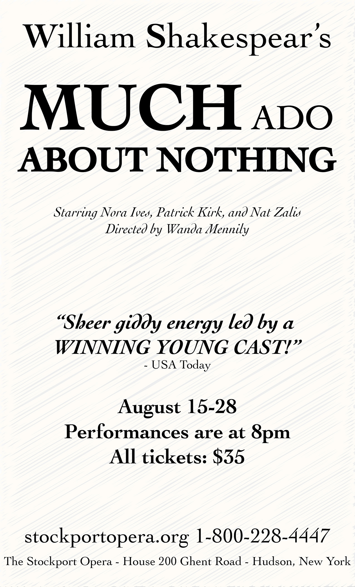

Graphic Art 4
Fourth digital art project from Davis Technical College exploring innovative visual ideas.

Process
Experimented with abstract compositions, color contrast, and digital textures to evoke emotion.
Tools Used
- Adobe Photoshop
Accessibility Statement
This project includes basic accessibility support through semantic HTML structure and descriptive alt text for images. However, the artwork is highly visual and experimental, which may limit full comprehension for users relying on assistive technologies. Future improvements could include more detailed textual descriptions of visual elements, stronger contrast validation, and additional usability testing with screen readers.